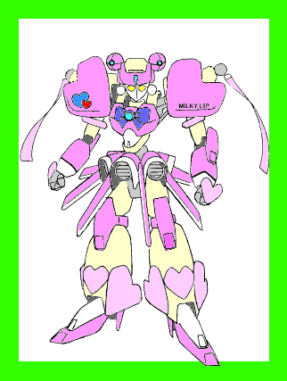

——華代ちゃんシリーズ——
「操り人形」
原案：真城 悠 ＣＲＥＡＴＥＤ ＢＹ ＭＯＮＤＯ
※「華代ちゃん」シリーズの詳細については、
http://www.yasuragi.or.jp/~issay/novel/kayo_chan/kayo_chan.html
を参照して下さい。
こんにちは。初めまして。私は真城華代と申します。
最近は本当に心の寂しい人ばかり。そんな皆さんの為に私は活動しています。まだまだ未熟ですけれども、たまたま私が通りかかりましたとき、お悩みなどございましたら是非ともお申しつけ下さい。私に出来る範囲で依頼人の方のお悩みを露散させてご覧に入れましょう。どうぞお気軽にお申しつけ下さいませ。
報酬ですか？ いえ。お金は頂いておりません。お客様が満足頂ければ、それが何よりの報酬でございます。
さて、今回のお客様は……
特設アリーナの中央で、二体の人型が拳をまじえていた。
全高約三メートル。ＦＲＰ（強化プラスチック）の装甲をまとい、アクチュエータの伸縮音を響かせながら取っ組み合うそれらは、ヒトの形と動きを模した機械——メガパペット（競技用有線操作式人型有脚マニピュレーター）と呼ばれる代物である。
背中にあるドラムからケーブルが伸び、その先端はトリガーと呼ばれる操縦器に接続されている。プレイヤー（操縦者）はそれを介して自らのメガパペットを操り、人型機械用に考案された様々な競技に参加するのだ。
それらを総じて、ロボＴＲＹ（ロボット・トライアスロン）という。
今、この場で開催されているのは、メガパペットを使った
“格闘戦”
である。……プレイヤーの技量と使用するメガパペットの性能、そして、プレイヤーの機体に対する思い入れが如実にあらわれる競技だ。
「ふ〜ん。パドックからだとこんな風に見えるんだ……」
駐機場からアリーナを見ていた正樹は、その可愛らしい声に思わず振り返った。
アリーナ中央ではその瞬間、一方のメガパペットがもう一方の肩と胴体の接合部に手刀を叩き込んで、勝負を決した。
「わあっ、すごいすごい。逆転勝ち〜っ」
正樹の横で手をたたきながらはしゃいでいたのは、小学生くらいの少女であった。
出場者の身内の子かな……と思いながら、正樹はあたりを見回した。だが、駐機場にいる者はみな、自分の機体のチェックをしているか、次の試合に気を取られているかのどちらかであった。
誰も少女のことを目にとめてはいない。
「……あ、ごめん。おにいちゃん」
正樹の視線に気付いたのか、少女は口に手を当てて軽く微笑む。そして首から下げていたポシェットからごそごそと何かを取り出し、差し出した。「……申し遅れました。あたし、こーゆー者です」
——ココロとカラダの悩み、お受け致します。 真城 華代——
「ねえ、おにいちゃんもこれに出場するんでしょ？」
目の前にいる、学生である自分より明らかに年下に見える少女と、渡された名刺のアンバランスさにしばし戸惑っていた正樹は、そう尋ねられて思わず顔を上げた。
「う…………うん、出るよ」
歯切れの悪いその口調に、少女は眉をひそめる。「あれ……？ もしかしたら、出たくないの？」
「そ、そんなこと……ないけど……」
目をそらして答える正樹。のぞき込むように、少女は顔を近づけてきた。
「そう。…………ねえ、おにいちゃんのメガパペットって、どれなの？」
一瞬、正樹の顔に朱がさす。そして、ため息をひとつつくと、彼は駐機場の隅を指さした。
「……あっ、あたしこれ知ってる。来月から始まるＴＶアニメに出てくるロボットでしょ？」
機体の足元に駆け寄って、それを見上げる少女。
細身のメガパペットであった。ベース機はおそらくＴＸシリーズであろう。
「うわあ、すっご〜いっ」
少女の歓声に、正樹は照れくさそうに頬を掻いた。
肩のつけ根をえぐられたメガパペットが、台車に乗せられて戻ってきた。勝利した相手は、アリーナを挟んだ反対側の駐機場へと引き上げている。
「へ〜っ。じゃあ、これって番組の宣伝用に作ったものなんだ……」
「ああ。実はオレ、バイトでアニメ製作の進行手伝っててさ。
……んで、今日の競技会に参加するって言ったら、『じゃあこの機体でエントリーしてくれ』
って、宣伝部のヒトに押しつけられちゃって……」
「ふ〜ん」
いつしか正樹は、自分の機体の前で少女と話し込んでいた。
「エントリー費用や経費はみんな会社でもつからって言われて、ついふたつ返事でＯＫしちゃったけどさ——」
「でも…………あまり乗り気じゃない」
「まあね。いまさらだけど」
「う〜ん、確かにこのメガパペット、強そうっていうより……」
そうつぶやきながら腕を組んで、正樹の機体を上から下まで眺めまわす少女。

手脚はワンランク小ぶりなものに換装されており、よけいに細く、華奢に見える。さらにかかとはハイヒール、腰まわりのベンチレーター（排熱器）とスタビライザーはフレアスカートを思わせ、胸元にはリボン風の飾り装甲。腕や肩、足首にはハート型の意匠がちりばめられ、頭部にはシニヨンのつもりか球形のパーツが取り付けてある。 どうも、ＭＯＮＤＯです。
「シェアワールド・華代ちゃんシリーズ」
に、わたしも参加させていただきました。
……と、言いつつ、実は華代ちゃんをわたしの作品世界に引きずり込んだような展開でした。
（ちなみに、甲介は反対側のパドックにいたので、華代ちゃんには会っていません。念のため）
調子こいてメカデザイン（？）もしてしまうし。
さらには図々しくもに原作者の真城さんを差し置いて、“アニメキャラのコスプレ”
やってしまいました。
おまけにあのキャラクター、モトネタは何かって言うと、一目……もとい、一読瞭然。
…………ああっ、石を投げないでっ。
１９９９．８．２２ ＭＯＮＤＯ